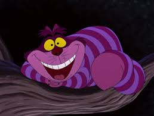

Famous Cats
Famous cats have left their paw prints across history, pop culture, and the internet...
- Garfield - The lasagna-loving cartoon cat created by Jim Davis.
- Cheshire Cat - A fictional character... 
- Stubbs - The real-life cat mayor...
- Grumpy Cat - An internet sensation...


10 Fascinating Facts About Cats
- Cats have five toes on their front paws.
- Cats can rotate their ears 180 degrees.
- The world's oldest cat lived to be 38 years old.
- Cats sleep for 70% of their lives.
- A group of cats is called a clowder.
- Cats can make over 100 different sounds.
- The average cat weighs between 9 and 11 pounds.
- Cats have a specialized collarbone that allows them to always land on their feet.
- The world's largest cat measured over 48 inches long.
- Cats have a unique grooming pattern, often starting with their front paws.
Learn about different cat breeds, their behaviors, and how to take care of them.
Find a cat near you!
Use the map below to locate Mackamey animal shelter and rescue a cute cat today!
(423) 305-6500